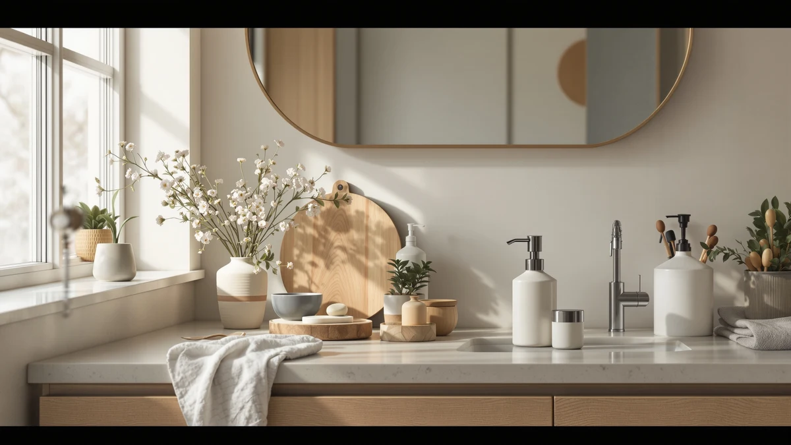

How to Clean Soap Dispenser (2026)
Prices and picks verified as of August 2026. Independent, reader-supported reviews.


Things to Know Before You Buy
- Dried soap, not dirt, causes most pump clogs, so a warm water soak solves more problems than scrubbing does.
- Foaming dispensers clog faster than liquid ones because the mesh screen inside the pump traps residue.
- Hard water leaves mineral scale on the pump piston, and a vinegar rinse breaks that down without harsh chemicals.
- You do not need to buy a new dispenser when the pump stops working. Most sticking pumps recover after a proper clean.
- Letting parts air dry completely before reassembly prevents new soap from mixing with trapped moisture and mildew.
Knowing how to clean soap dispenser parts properly is the difference between a pump that lasts for years and one you replace every few months. Soap does not disappear when it dries inside a pump. It hardens into a waxy film that narrows the tube, sticks the piston in place, and eventually stops the dispenser from pushing out anything at all. You can see the same buildup around the nozzle, where a crusty ring forms after weeks of use.
The fix takes about 25 minutes and uses supplies you likely already have under the sink. This guide walks you through disassembling the pump, soaking away dried residue, flushing the tube with a vinegar solution, and putting everything back together so it dispenses smoothly again. Follow these five steps in order and your dispenser should work like new by the time you finish.
What You'll Need
- Supplies: white vinegar, warm water, dish soap
- Tools: soft-bristle brush or old toothbrush, microfiber cloth
Step 1: Empty and disassemble the dispenser
Start by pouring out whatever soap is left in the bottle. If it has thickened or separated, that is a sign it sat too long and contributed to the clog you are dealing with now. Pull the pump head straight up and out of the bottle, keeping steady pressure so you do not snap the plastic tube connecting it to the piston.
Once the pump is free, separate it into its main pieces: the head, the collar or locking ring, the dip tube, and the bottle itself. Foaming dispensers usually include an extra mesh screen near the base of the pump. Set that screen aside carefully since it is the part most likely to trap dried soap and slow down the foam.
Lay everything out on a towel so you can track each piece. This step alone often reveals the source of the problem, whether that is a cracked tube, a screen packed with residue, or a bottle rim crusted with old soap.
Step 2: Soak the pump and tube in warm water
Fill a bowl or a cup with warm water and submerge the pump head, the mesh screen, and the dip tube. Let them sit for 15 minutes. The warm water softens dried soap that has built up along the inside walls of the tube and around the moving piston, which is usually why a pump feels stiff or refuses to spring back after you press it.
While the pump parts soak, wipe down the bottle with a damp cloth to loosen any surface grime around the neck. If the bottle has a wide opening, this is also a good time to check for a ring of dried soap sitting at the waterline, since that ring tends to build up fastest and can flake into the fresh soap you add later.
After 15 minutes, gently move the piston up and down inside the pump head while it is still submerged. You should feel it loosen. If it still feels stuck, give it another 10 minutes in the water before moving to the next step.
Step 3: Flush the pump with a vinegar solution
Mix equal parts white vinegar and warm water in a small cup. Insert the dip tube into the solution and press the pump repeatedly, drawing the liquid up through the tube and out the nozzle. Do this 15 to 20 times. The vinegar cuts through mineral scale left by hard water and dissolves any remaining film the soak did not fully clear.
Watch what comes out of the nozzle as you pump. Cloudy or discolored liquid means there is still residue working its way loose, so keep flushing until the solution runs clear. This step is what actually fixes a sticking or unevenly dispensing pump, since it clears the internal channel rather than only the visible surfaces.
If your dispenser has a foaming screen, hold it under running water and use your fingers to work the vinegar solution through the mesh from both sides. That screen clogs faster than any other part, so give it extra attention here.
Step 4: Scrub the bottle and nozzle
Wash the empty bottle with warm water and a few drops of dish soap, scrubbing the inside walls with a bottle brush if the opening is narrow. Rinse thoroughly so no soap residue remains, since leftover suds will foam up strangely when you refill it.
Turn your attention to the nozzle opening, where dried soap tends to crust around the edge and form a small ring. Use a soft-bristle brush or an old toothbrush dipped in the vinegar solution to scrub that ring away. Work slowly here, since scraping too hard with a sharp tool can crack the plastic or scratch a glass nozzle.
For dispensers with a decorative base or textured glass, a toothbrush also reaches into grooves that a cloth cannot. A few minutes of scrubbing at this stage prevents the ring from hardening again the next time soap dries around the opening.
Step 5: Rinse, dry, and reassemble
Rinse every piece under clean running water to remove any trace of vinegar or dish soap. Skipping this step leaves a faint smell that can mix with your soap and change its scent, so take the extra minute to rinse thoroughly.
Lay the parts on a towel and let them air dry completely before you put anything back together. Reassembling a pump while it is still wet traps moisture inside the tube, which encourages mildew and defeats the point of cleaning it in the first place. This usually takes an hour or two, so plan to finish this step before you need the dispenser again.
Once everything is dry, reinsert the dip tube, screw the pump head back onto the bottle, and refill it with soap. Press the pump a few times over the sink until soap flows evenly. If you followed each step, it should dispense as smoothly as it did the day you bought it.
Common Mistakes to Avoid
The biggest mistake people make when they learn how to clean soap dispenser parts is skipping the soak and going straight to scrubbing. Dried soap sets hard inside a narrow tube, and scrubbing alone rarely reaches it. Warm water breaks the film down so the vinegar flush actually has something to dissolve, and cutting that step short is why some pumps still stick after a quick wipe-down.
Another common error is reassembling the dispenser before the parts are fully dry. Trapped moisture inside the tube creates a breeding ground for mildew, and you will notice a musty smell within a week or two. Give every piece an hour or more of air-drying time on a towel before you put it back together.
People also reach for bleach or harsh chemical cleaners to speed things up. These can degrade the rubber seals inside the pump and leave a chemical residue that ends up on your hands. Vinegar and dish soap handle nearly every clog without that risk.
Finally, avoid forcing a stuck piston. If the pump still feels rigid after soaking, put it back in warm water rather than yanking on it. Forcing a stuck part is the fastest way to crack the plastic housing and turn a cleaning job into a replacement.
Refilling a bottle before it is fully dry is another habit worth breaking, since fresh soap mixed with lingering water dilutes it and speeds up the next round of buildup.
Our Top Picks
If your current dispenser is beyond saving even after a proper clean, these three hold up better between cleanings and come apart easily when it is time to do it again.

Editor’s Pick
OHIFAST Automatic Foaming Soap Dispenser
The wide fill opening and sensor housing pull apart without tools, so a full clean takes about five minutes.
$21.99
Check Price on Amazon
Best Value
GOJO LTX-12 Touch-Free Foam Hand
A refillable cartridge replaces most of the parts that usually clog, cutting down how often you need to descale.
$20.69
Check Price on Amazon
Premium Choice
Home Zone Living Foaming Hand
A simple two-piece pump means fewer places for dried soap to hide, which makes the vinegar flush faster.
$19.69
Check Price on AmazonHow often should you clean a soap dispenser?
Clean a soap dispenser every two to three weeks with regular use, and sooner if the pump starts sticking or the soap comes out unevenly.
Why is my soap dispenser pump stuck?
A stuck pump is almost always dried soap hardening inside the tube or piston.
Frequently Asked Questions
How often should you clean a soap dispenser?
Clean a soap dispenser every two to three weeks with regular use, and sooner if the pump starts sticking or the soap comes out unevenly. Dispensers that hold thicker soaps or foaming formulas tend to clog faster and may need attention every two weeks.
Why is my soap dispenser pump stuck?
A stuck pump is almost always dried soap hardening inside the tube or piston. Soaking the pump in warm water and flushing it with a vinegar solution usually frees it up without needing a replacement part.
Can you clean a soap dispenser without vinegar?
Yes. Warm water and a few drops of dish soap will dissolve most residue on their own. Vinegar speeds things up and cuts through mineral deposits if you have hard water.
Is it safe to put a soap dispenser pump in the dishwasher?
Skip the dishwasher for the pump mechanism. Hot water and detergent can warp the plastic housing or degrade the internal spring. The glass or plastic bottle is usually fine on the top rack, but hand wash the pump head with warm water and a brush instead.
Why does my soap dispenser smell bad after cleaning?
A lingering smell usually means moisture got trapped inside the tube before you refilled it, which allows mildew to grow. Take the pump apart again, rinse it, and let every piece air dry for a few hours before you reassemble it and add fresh soap.
Verdict
Now you know how to clean soap dispenser parts without buying anything beyond vinegar and dish soap. The process comes down to disassembling the pump, soaking away dried residue, flushing the tube, scrubbing the bottle and nozzle, and letting everything dry before you put it back together. Skip the soak or the drying time and you will likely be back here in a month dealing with the same stuck pump.
If your current dispenser still fights you after a thorough clean, or the plastic has cracked from age, it may be time to replace it. The OHIFAST Automatic Foaming Soap Dispenser is our top pick for anyone starting fresh, since its wide fill opening and simple sensor housing make future cleanings quick rather than a chore. Either way, a five-minute maintenance routine every few weeks keeps soap flowing smoothly and saves you from replacing a pump that only needed a proper clean.